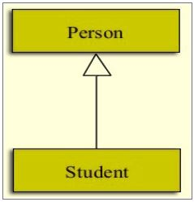
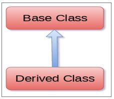
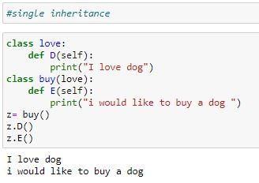
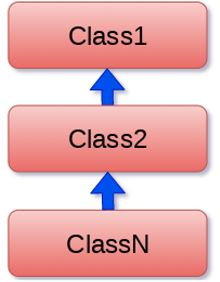
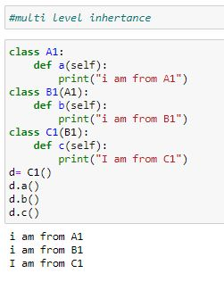
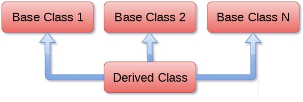
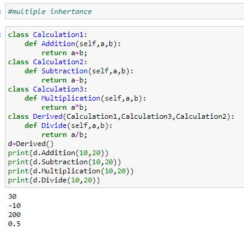

Inheritance
Inheritance provides code reusability to the program because we can use an existing class to create a new class instead of creating it from scratch. In inheritance, the child class acquires the properties and can access all the data members and functions defined in the parent class. A child class can also provide its specific implementation to the functions of the parent class.
A derived class can inherit base class by just mentioning the base in the bracket after the derived class name.

syntax
class derived class (base class):
class suite
Example:
class A:
# variable of class A
# functions of class A
class B(A):
# variable of class A
# functions of class A
# add more properties to class B
Types of inheritance
1. Single
2. Multiple
3. Multilevel
4. Hierarchical
5. Hybrid
Single inheritance
When a child class inherits from only one parent class, it is called as single inheritance.

Syntax
Class derived class(baseclass):
class-suite

Multi level inheritance
Multi-level inheritance is archived when a derived class inherits another derived class. There is no limit on the number of levels up to which, the multi-level inheritance is archived in python.

Syntax
Class class1:
class suite
Class class2(class1):
class suite
Class class3(class2):
class suite

Multiple inheritance
Python provides us the flexibility to inherit multiple base classes in the child class.

Syntax:
Class Base1:
class suite
Class Base2:
class suite
.
.
Class BaseN:
class suite
Class Derived(Base1,Base2,……Base N):
class suite
